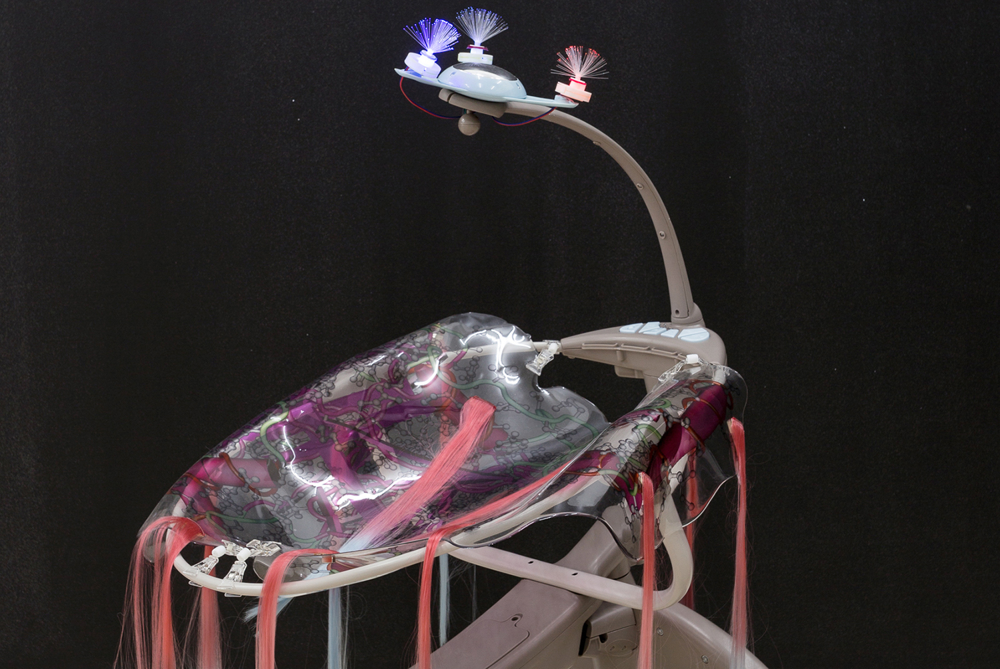
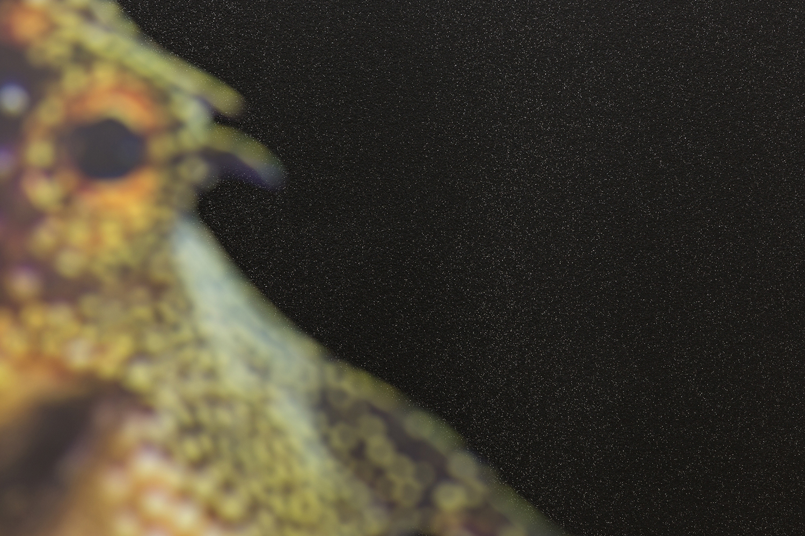
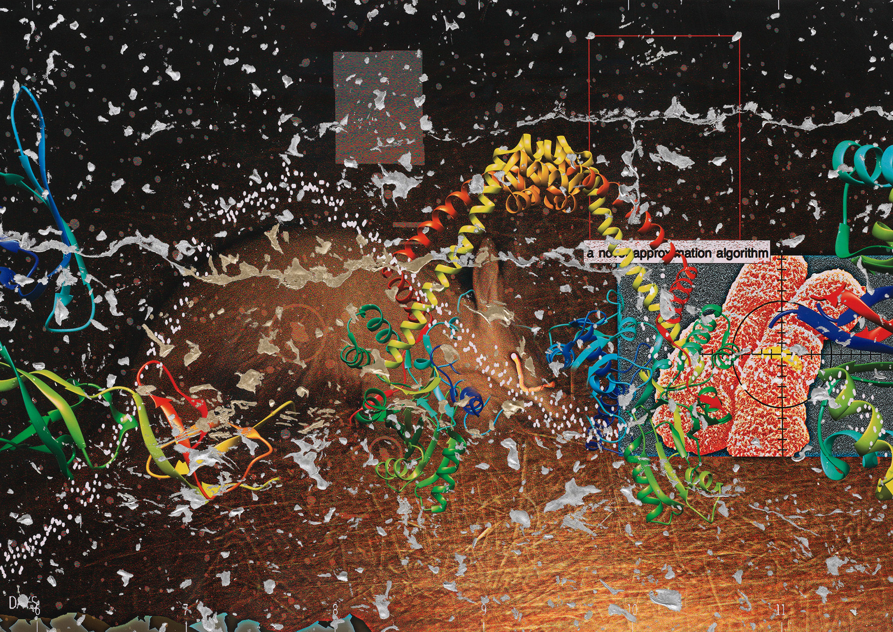
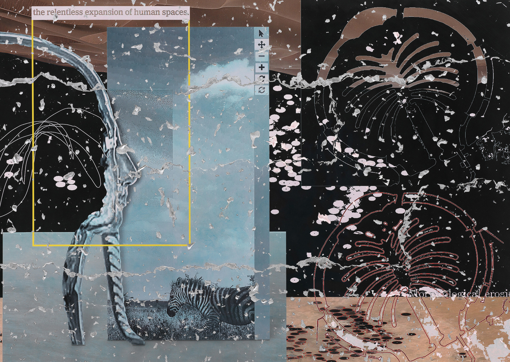
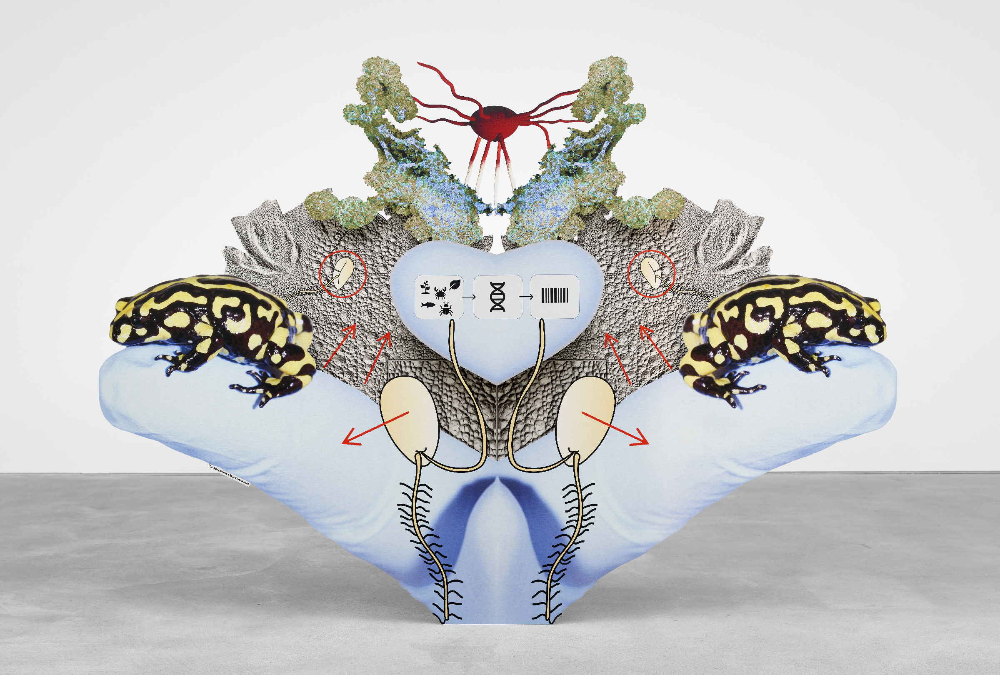
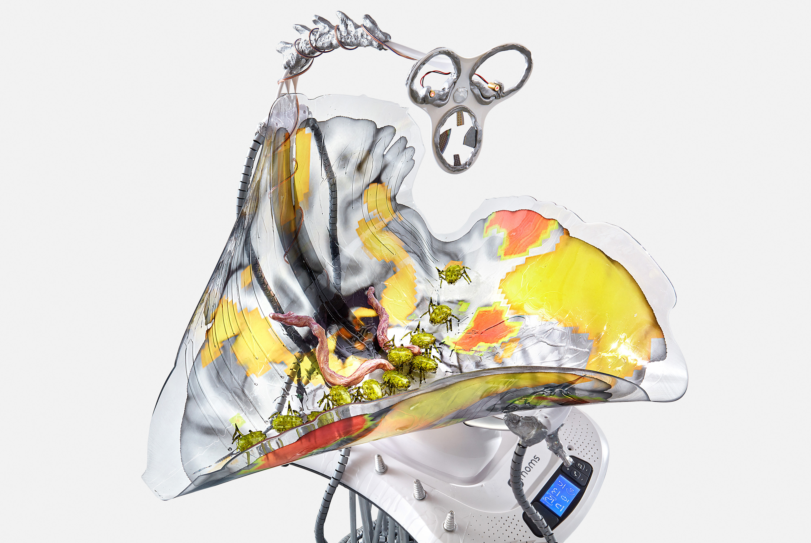
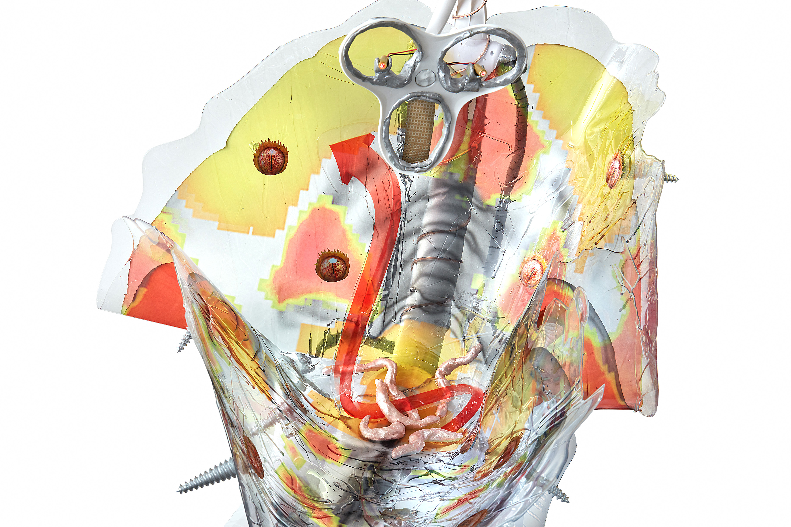
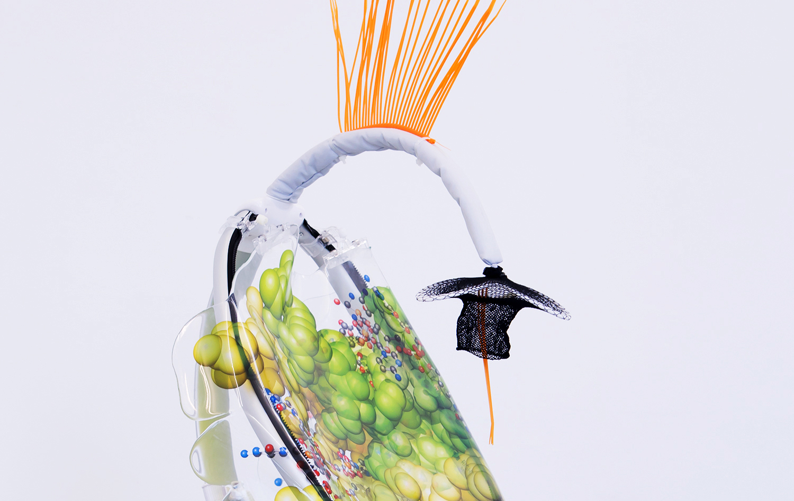

Beyond human eyes and seeking chaotic realities
Dawn Mission (2016) by Katja Novitskova
Novitskova’s work reflects on the impact of digital imagery on our understanding of reality. In her sculptures and installations, Novitskova appropriates pictures found online and repurposed them as freestanding objects. Co-opting the aesthetics of corporate advertising, the artist explores how the format of the image, be it online stock photography or marketing signs and banners, defines the audience’s perception of its meaning.


An exploration of how the format of the image, be it online stock photography or marketing signs and banners, defines the audience’s perception of its meaning. A selection from online sources that refers to realities lying beyond the capacities of the human eye.
Dawn Mission is populated by sculptures whose constitution appears hard to comprehend at first sight. For her works, Novitskova (b. 1984) adapts images from online sources that refer to realities lying beyond the capacities of the human eye, but which have long entered our lives as visual artifacts. Today, almost all aspects of human and increasingly non-human lives are registered or modeled by software on an environmental scale. Data collection and processing have long transcended the limits of our planet and have become the tools to navigate beyond and throughout Earth. High-sensitive satellite cameras, military machines, space probes, and electronic microscopes provide image data often exceeding the human spectrum of vision.


Earthware series (2019), by Katja Novitskova, superimposing forma to create a poetic interaction between the human, non-human and machinic, venturing beyond our anthropocentric perspective, a new articulation of the role of the image.
Those collected datasets can be described as translations of light into numeric code, which is not meant for direct human processing. The collected imagery often only exists within a dimension of data analyzing algorithms invisible to us. Once a relevant pattern in the set is identified through computation, it can be translated into a picture— a visual artifact and source of information, a format familiar to us for millennia.

Approximation (The Apocalypse’s Many Horsemen) (2020), by Katja Novitskova, as a digital exploration of reality and nature.
At the same time there are vast datasets only human eyes are able to process in efficient ways: despite the algorithmic dominance, data-analysis programs often operate in accordance with a logic that doesn’t make sense to us. They are simply not good at “seeing.” Online citizen science projects that focus on this crossover space between big data and human perception are Novitskova’s starting point for Dawn Mission. These projects rely on crowd analysis of visual datasets featuring patterns too complex to be processed by a computer.


Mamaroo (2018), by Katja Novitskova, conceptual sculptures exploring the relation between human perception and digital imagery, defined by the artist as smoldering brains and growth potential. Photography by Gunter Lepkowski.
The users processing the images might be the first non-machines to lay their eyes on this particular registry of reality. This tensional field of translation is where Novitskova intervenes with her works. Continuing her interest in visual material produced by machines at frontier environments like Mars, deep-sea floor and other alien worlds, Novitskova focuses on a light-sourced dataset as a frontier in itself, and a fruitful resource of novel patterns.

Installations by Katja Novitskova, reflecting on the impact of digital imagery on our understanding of reality.
By superimposing and re-contextualizing these forms, the artist creates a poetic interaction between the human, non-human and machinic, venturing beyond our anthropocentric perspective. Dawn Mission thus explores the radically new articulation of the role of the image, and how constant mediation gains an ecological dimension. Within this artistic research Novitskova’s role could be understood as comparable to any data-processing species seeking for patterns in their chaotic reality.
Katja Novitskova (2016), Dawn Mission